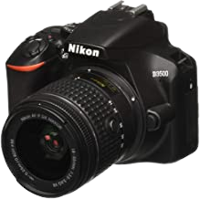
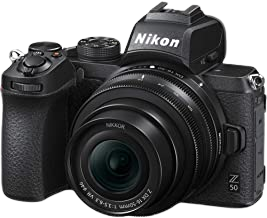
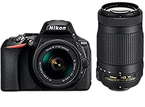
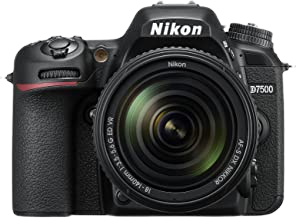
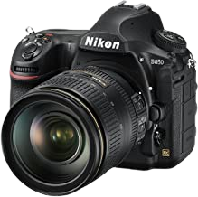

NIKKON CAMERAS
NIKKON D3500

Brand: Nikon
Model Name: D3500
Form Factor: DSLR
Effective Still Resolution: 24.2 MP
Special Feature: special effects modes
(night vision; super
vivid; pop;photo illustration;
toy camera effect;
miniature effect;selective color;
silhouette; high
key; low key)special effects
modes(night vision;
super vivid; pop; photo illustration; toy
camera effect; miniature
Optical Zoom: 3 x
Colour: Black
Connector Type: Bluetooth, Wi-Fi, NFC
Screen Size: 3 Inches
Photo Sensor Size: APS-C fps
 lake
lake
 creative
creative
 nature
nature
 lonely
lonely
VIEW
ABOUT
1.Sensor: APS-C CMOS Sensor with 24.2 MP (high resolution for large prints and image cropping)
2.ISO: 100-25600 sensitivity range (critical for obtaining grain-free pictures, especially in low light)
3.Image Processor: Expeed 4 with 11 autofocus points (important for speed and accuracy of autofocus and burst photography)
4.Video Resolution: Full HD video with fully manual control and selectable frame rates (great for precision and high-quality video work)
5.Connectivity: Built-in Bluetooth (useful for remotely controlling your camera and transferring pictures wirelessly as you shoot)
6.Lens Mount: Nikon F mount.
7.Country of Origin: Japan
NIKKON Z50

Brand: Nikon
Model Name: Mirrorless
Form Factor: Compact, Mirrorless
Effective Still Resolution: 20 MP
Special Feature: time lapse
Optical Zoom: 3 x
Colour: Black
Connector Type: HDMI
Screen Size: 3.2 Inches
Photo Sensor Size: Full Frame (35mm)
 kid
kid
 tree
tree
 flower
flower
 taj mahal
taj mahal
VIEW
ABOUT
Effective pixels: 20.9million Automatically switches between monitor and viewfinder displays Image Dust Off reference data (requires Capture NX-D)DX.CMOS
NIKKON D5600

Brand: Nikon
Model Name: D5600
Form Factor: DSLR
Effective Still Resolution: 24.2 MP
Special Feature: Special Effects Modes
(Night Vision,
Super Vivid, Pop, Photo
Illustration, Toy
Camera Effect, Miniature
Effect, Selective
Color, Silhouette, High Key,
Low Key)Special
Effects Modes (Night Vision,
Super Vivid,
Pop, Photo Illustration, Toy
Camera Effect, Miniature Effect.
Optical Zoom: 3 x
Colour: Black
Connector Type: Wi-Fi,
NFC and Bluetooth
Screen Size: 3.2 Inches
Photo Sensor Size: APS-C fps
 temple
temple
 lake
lake
 car
car
 flower
flower
VIEW
ABOUT
1.Sensor: APS-C CMOS Sensor with 24.2 MP (high resolution for large prints and image cropping)
2.ISO: 100-25600 sensitivity range (critical for obtaining grain-free pictures, especially in low light)
3.Image Processor: Expeed 4 with 39 autofocus points (important for speed and accuracy of autofocus and burst photography)
4.Video Resolution: Full HD video with fully manual control and selectable frame rates (great for precision and high-quality video work)
5.Connectivity: WiFi, NFC and Bluetooth built-in (useful for remotely controlling your camera and transferring pictures wirelessly as you shoot)
Lens Mount: Nikon F mount
NIKKON D7500

Brand: Nikon
Model Name: D7500
Form Factor: DSLR
Effective Still Resolution: 20.9 MP
Special Feature: image stabilization
Optical Zoom: 5 x
Colour: Black
Connector Type: Wi-Fi
Screen Size: 3.2 Inches
Item Weight: 2.02 Pounds
lake
 sunset
sunset
 book
book
 tree
tree
VIEW
ABOUT
This Certified Refurbished product is tested to work and look like new with minimal to no signs of wear & tear; the product comes with relevant
accessories and is backed by a minimum six month supplier backed warranty; box may be generic 20.9MP DX-Format CMOS Sensor, SnapBridge Bluetooth and Wi-Fi
4K UHD Video Recording at 30 fpsMulti-CAM 3500FX II 51-Point AF SystemNative ISO 51200, Expanded ISO 1,640,000
NIKKON D850

Brand: Nikon
Model Name: D850
Form Factor: DSLR
Effective Still Resolution: 45 MP
Special Feature: time lapse
Optical Zoom: 5 x
Colour: Black
Screen Size: 3.2 Inches
Photo Sensor Size: APS-C fps
Shooting Modes: Sports
nature
.jpeg) river
river
 wedding
wedding
 squirrel
squirrel
VIEW
ABOUT
D850 with the AF-S NIKKOR 24-120MM F/4G ED VR(64GB SD included)
Comes with battery, charger and manual
Create epic film masterpieces in full-frame 4K UHD with NIKKOR wide-angle lenses or prolong exquisite moments with its 120p/100p Full HD slow-motion recording
Fashion, nature, sports or wedding photography and videography
Country of Origin: Japan